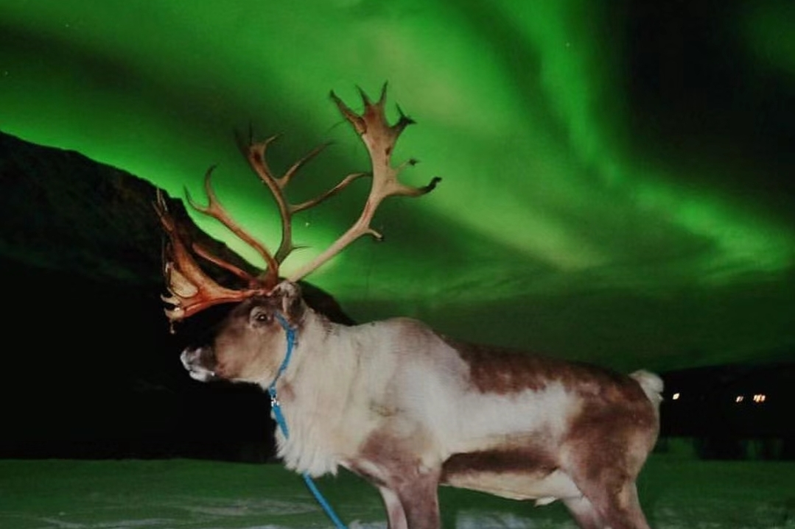
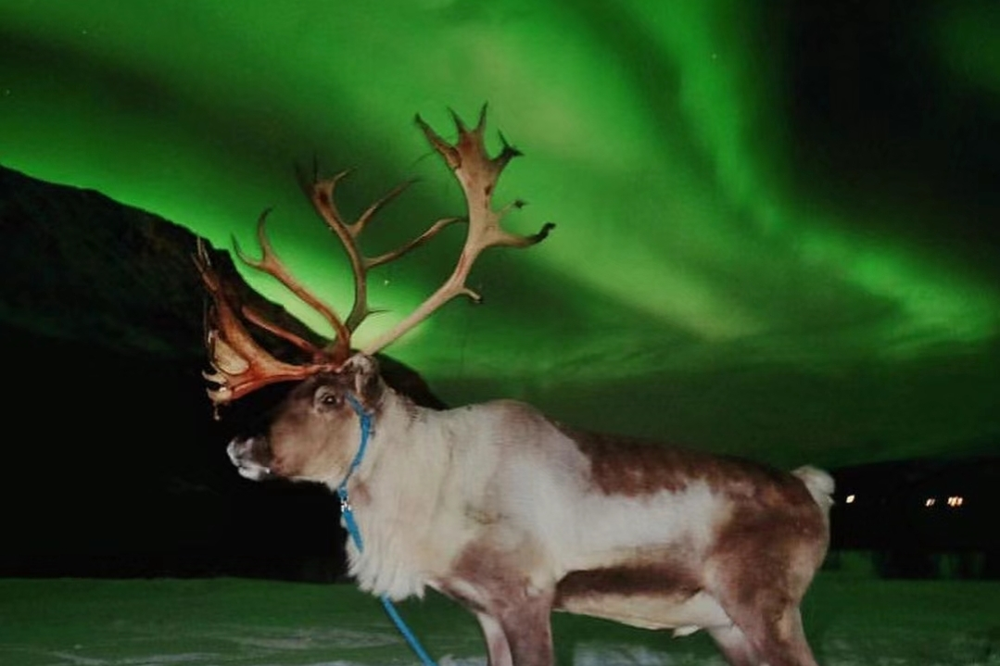

Reindeer under the northern lights
At this authentic Sami camp, you can meet herds of reindeer and take part in feeding sessions for these adorable animals. If you are lucky, you can even see the magical Northern Lights, because the camp is located in a perfect place, there is almost no artificial light polluting the air, seeing the Northern Lights in the North Pole while being surrounded by a herd of reindeer is the ultimate Norwegian experience!
 
